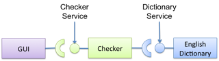
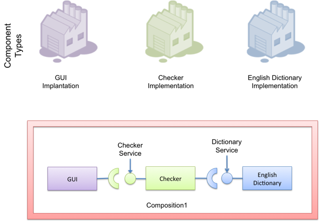
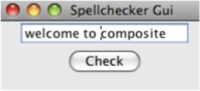
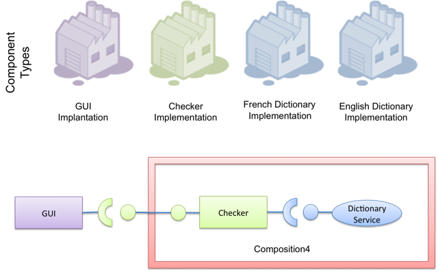
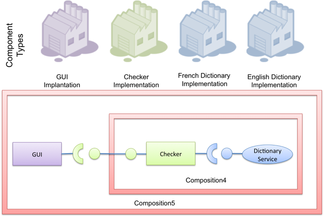

The iPOJO documentation has moved
The new web site is here, update your bookmark.
iPOJO Composition Tutorial
This page describes how works the composition mechanisms provided by iPOJO and how to use it. this feature allows you to design applications that will natively support the dynamism and the evolution.
- Why providing a composition layer?
- The different types of composition in the OSGi world
- The iPOJO composition theory for the dummies
- Downloads
- Let's start with a first composition
- Importing a service inside a composite
- Abstracting implementation... Composing services
- Publishing services
- Hierarchical composites
- Conclusion
Why providing a composition layer?
iPOJO aims to simplify the creation of OSGi (dynamic) applications. Creating such as applications is basically a two steps process:
- Developing services and components
- Assembling them together to create the application
To tackle the first step, iPOJO provides an easy-to-use development model. But, this does not help to design the application. To conduct the second step, iPOJO provides a composition language allowing to:
- Assemble components and services together
- Assert service isolation inside a composition
- Hide/Abstract implementations
What about privacy?
Service or component composition has a stringent requirement. How to isolate components and services of an application to avoid side effects as an unexpected access to a used service ...iPOJO composites just provide an isolation mechanism. Services provided inside a composite ARE NOT published globally (inside the OSGi service registry). So, only the component instances living in the same composite can access to those services.
However, it is also possible to import a service from the parent/global service registry, as well as to export a service to the parent (i.e. superior) composite.
The different types of composition in the OSGi world
Basically there is two types of composition in OSGi:
- The intra-bundle composition
- The service-based composition
Intra-bundle composition
The intra-bundle composition is the policy followed by Spring-DM. Each bundle contains components. These components can require and provide services from the global (OSGi) registry. Moreover, these components can collaborate together inside the bundle without providing/requiring services. So the isolation scope of intra-bundle composition is the bundle. This type of composition allows providing coarse-grain services provided by the collaboration of several components. However, it is not possible to update one of those components, as the update unity is the bundle.
Service-based composition
There are two types of service composition. The behavioral service composition is like BPEL for the web services. An orchestrator supervises the execution and the collaboration of services like:
- Call service A
- Call service B
- ...
The second type of service composition is the structural service composition. This aims to provide a kind of Architecture Description Language for service-based applications. iPOJO follows this trend. This way as several advantages:
- Avoids coupling a composition to specific implementation, and so it supports the dynamic substitution
- Allows the evolution of used services and components at runtime
This is also the way followed by SCA. However, SCA does not specify how the dynamism should be handled.
The iPOJO composition theory for the dummies
The distinction between component types and instances
When you declare a <component> (or a <composite>) in your metadata, you're declaring a component type. Then you declare instances from these component types. This mechanism is critic for the iPOJO composition. Indeed, inside a composite, you're able to create instances from any (public) component types (Refer to the Factory web page for further details).
On the top of this mechanism, we can define the concept of service implementation. A service implementation is just a component type where the instances provide a service. For example, if the instance from a component type provides the service S, the component type is a service implementation of S, and so can be used to create a provider of S.
The service context concept
The service context is the concept allowing service isolation. OSGi bundle context allows accessing both to bundle-based functionality (like loadClass) and to the service registry. However, OSGi defines only one service registry, accessible by any bundles. iPOJO splits these two interaction types. Instances receive an iPOJO Bundle Context delegating bundle-related methods to the "regular" bundle context, and service-related methods to a service context. This service context can access to the OSGi service registry or to a new one. Each composition instances have a service registry. Instances creates inside the composition used this service registry through received the iPOJO Bundle Context.
Downloads
Download the archive. This archive contains:
- The different applications and component types implemented in this tutorial
- A preconfigured version of Felix
- Deployment scripts
Launch ant from the base directory of the unzipped archive to create every bundles. Then, you can test the different examples by copying and pasting commands from the script.txt file (in the felix folder) in the Felix shell.
Let's start with a first composition
In the iPOJO in 10 minutes tutorial, we created an application checking a sentence against dictionaries. We'll reuse this simple application in this tutorial.
So first, we need to implements several component types:
- The dictionary service implementation, containing words
- The Check service implementation, providing methods to check words against dictionaries
- And the client GUI, using a Check Service to indicate misspelled words.
We will reuse the same implementation than in the previous tutorial. The current application is designed as follow:

However, imagine that you want to isolate services provided and required by your application. For example, you want to isolate a stateful service or a critical (private) resource.
So, let's imagine a second version of our spellchecker application. In this application, the dictionary service, and the checker service are isolated inside a composite. So, those services will be accessible only from instances living in the composite. The GUI will also be instantiated inside the composite. The composition will be something like:

The descriptor of this application is:
<ipojo> <!-- Declares a composition --> <composite name="composition1"> <!-- Instantiates an instance of the English dictionary --> <instance component="spell.english.EnglishDictionary"/> <!-- Instantiates an instance of the Checker --> <instance component="spell.checker.SpellCheck"/> <!-- Instantiates an instance of the GUI --> <instance component="spell.gui.SpellCheckerGui"/> </composite> <!-- Instantiates an instance of our composition --> <instance component="composition1"/> </ipojo>
First, a composite type is declared inside an iPOJO descriptor. A composite contain always a name attribute, which is the component type name. Inside the <composite></composite>, three instances are declared: the three instances used by our application. Remark that these instances are declared as 'regular' instances. The component attribute indicates the component type to use. Instances can be configured as regular iPOJO instances. Finally, an instance of our type is also declared.
To execute our composition, go in the felix directory and launch the following command:
java -jar bin/felix.jar
This version of Felix starts with the iPOJO framework, the iPOJO Arch command and the composite support. So, we just need to install our component types and the composition.
In the Felix prompt, launch the following commands:
start file:../spell.services/output/spell.services.jar start file:../spell.english/output/spell.english.jar start file:../spell.checker/output/spell.checker.jar start file:../spell.checker.gui/output/spell.checker.gui.jar
Those commands deploy the component types. Remark that no 'functional' (i.e. neither Check service, nor Dictionary service) services are provided. Deployed bundles provide only iPOJO Factory services:
-> inspect s c System Bundle (0) provides: --------------------------- org.osgi.service.startlevel.StartLevel org.osgi.service.packageadmin.PackageAdmin Apache Felix Shell Service (1) provides: ---------------------------------------- ... Apache Felix Bundle Repository (3) provides: -------------------------------------------- org.osgi.service.obr.RepositoryAdmin iPOJO (4) provides: ------------------- ... iPOJO Composite (6) provides: ----------------------------- ... spell.english (8) provides: --------------------------- org.apache.felix.ipojo.Factory, org.osgi.service.cm.ManagedServiceFactory spell.checker (9) provides: --------------------------- org.apache.felix.ipojo.Factory, org.osgi.service.cm.ManagedServiceFactory spell.checker.gui (10) provides: ------------------------------- org.apache.felix.ipojo.Factory, org.osgi.service.cm.ManagedServiceFactory
Now, when can deploy our composition:
start file:../example1/output/composition1.jar
Once deployed and started, the fancy GUI appears:

Now, you can check that the functional services are not unavailable outside the composite:
-> inspect s c System Bundle (0) provides: --------------------------- org.osgi.service.startlevel.StartLevel org.osgi.service.packageadmin.PackageAdmin Apache Felix Shell Service (1) provides: ---------------------------------------- ... Apache Felix Bundle Repository (3) provides: -------------------------------------------- org.osgi.service.obr.RepositoryAdmin iPOJO (4) provides: ------------------- ... iPOJO Composite (6) provides: ----------------------------- ... spell.english (8) provides: --------------------------- org.apache.felix.ipojo.Factory, org.osgi.service.cm.ManagedServiceFactory spell.checker (9) provides: --------------------------- org.apache.felix.ipojo.Factory, org.osgi.service.cm.ManagedServiceFactory spell.checker.gui (10) provides: ------------------------------- org.apache.felix.ipojo.Factory, org.osgi.service.cm.ManagedServiceFactory Bundle 11 provides: ------------------- org.apache.felix.ipojo.Factory, org.osgi.service.cm.ManagedServiceFactory
Of course, if you stop a bundle providing a required service type, the application is stopped:
-> stop 8 -> start 8
Then, the application also supports component type update. However the component type name must not change. We will see later how we can avoid this issue by abstracting implementations.
Importing a service inside a composite
Let's imagine a second version of the checker service implementation (spell.checker-v2). This implementation removes the trace when wrong words are detected. Indeed, this implementation uses a log service to store such kind of errors.
If we use this implementation, we need to make a log service available inside the composite. Else, the checker will not be valid. To achieve this, use the following composite:
<ipojo> <!-- Declares a composition --> <composite name="composition2"> <!-- Instantiates an instance of the English dictionary --> <instance component="spell.english.EnglishDictionary"/> <!-- Instantiates an instance of the Checker --> <instance component="spell.checker.SpellCheck"/> <!-- Instantiates an instance of the GUI --> <instance component="spell.gui.SpellCheckerGui"/> <!-- Imports the log service --> <subservice action="import" specification="org.osgi.service.log.LogService"/> </composite> <!-- Instantiates an instance of our composition --> <instance component="composition2"/> </ipojo>
This composite just adds a subservice nested element. This subservice allows importing a service inside the composite. The action attribute specifies that we want to import the service from the parent scope (i.e. superior). The specification attribute indicates the required service.

Now, relaunch Felix and enter another profile name (composition2 for example). Once started, executes the following commands:
start file:../spell.services/output/spell.services.jar start file:../spell.english/output/spell.english.jar start file:../spell.checker-v2/output/spell.checker-v2.jar start file:../spell.checker.gui/output/spell.checker.gui.jar start file:../example2/output/composition2.jar
Those commands deploy required component type (note that we deploy spell.checker-v2) and an implementation of the OSGi Log Service. When you execute the last command, the fancy interface re-appears.
Try to enter a wrong word (as composite), and click on the check button. The trace does no more appear... the message is logged inside the log service.
Of course, such composite support dynamism. Try the following scenario
stop 9 start 9 stop 10 start 10
When the log service is stopped, the GUI disappears. In fact, the service can no more be imported, and so, the composition becomes invalid. When you stop a bundle containing a used component type, the same behavior occurs.
Like in the previous example, you can check that only the log service is globally available. Other services are isolated inside the composite.
In this case the parent scope is the OSGi service registry, but composite can also contain other composite. In such context, the import tracks services from the superior composite. An example of hierarchical composition is described later in this tutorial.
 Service Resolution
Service Resolution
Abstracting implementation... Composing services
We saw in the first composition that we depend on specific component types. This can be avoided by specifying the composition in term of services instead of component types. So, every available service implementation can be used. Moreover, if the used one disappears, another one can be immediately used to replace the missing service. Let's illustrate this.
In the first composition, we create an instance of the English dictionary service implementation. We can remove this coupling to this specific implementation. To do this, we will target any implementation of the dictionary service regardless the language.
<ipojo> <!-- Declares a composition --> <composite name="composition3"> <!-- Instantiates an instance of the English dictionary --> <subservice action="instantiate" specification="spell.services.DictionaryService"/> <!-- Instantiates an instance of the Checker --> <instance component="spell.checker.SpellCheck"/> <!-- Instantiates an instance of the GUI --> <instance component="spell.gui.SpellCheckerGui"/> </composite> <!-- Instantiates an instance of our composition --> <instance component="composition3"/> </ipojo>
The previous composition instantiates a dictionary service. This means that the composite looks for an implementation of the Dictionary service and creates an instance of this implementation (i.e. component type) inside the composition.
If several implementations are available, the composite chooses one, and switches to another one if the used implementation becomes unavailable.

To execute this composition, launch Felix and execute the following command:
start file:../spell.services/output/spell.services.jar start file:../spell.english/output/spell.english.jar start file:../spell.checker/output/spell.checker.jar start file:../spell.checker.gui/output/spell.checker.gui.jar start file:../example3/output/composition3.jar
These commands deploy component types and the composition. Only one implementation of the dictionary service is available (English). You can check this by executing the service 8 command.
-> inspect s c 9
spell.english (9) provides:
---------------------------
component.class = spell.english.EnglishDictionary
component.description = <unknown value type>
component.properties = <unknown value type>
component.providedServiceSpecifications = spell.services.DictionaryService
factory.name = spell.english.EnglishDictionary
factory.state = 1
objectClass = org.apache.felix.ipojo.Factory,
org.osgi.service.cm.ManagedServiceFactory
service.id = 39
service.pid = spell.english.EnglishDictionary
Note the component.providedServiceSpecifications property indicating provided services.
Now deploy another implementation of the dictionary service, such as the French dictionary service ☺
start file:../spell.french/output/spell.french.jar
Write welcome in the GUI and then check. The word is correctly spelled. Then, stop the bundle providing the English dictionary.
stop 9
Write welcome in the GUI, and check. The word is misspelled! Try to write bienvenue and check. The word is correctly spelled. This means that the composite has substitutes the previous English dictionary by the French one. This one will be use until it disappears. If you stop the bundle containing this implementation, the composite becomes invalid.
Publishing services
A composition can also provide services. iPOJO composites support two methods to provide services :
- The service export: re-export a service from the composite to the parent context
- The service implementation: the composite computes a delegation scheme to delegate every method of the provided service on internal entities (services and instances)
This section addresses the export. Exporting a service is the opposite of the service import. It tracks services from the composites to publish it in the parent (superior) context.
So, let's imagine a fourth version of our application. In this application, the GUI is externalized and lives in the global context (i.e. OSGi). So, the composition exports the spell checker service.
<ipojo> <!-- Declares a composition --> <composite name="composition4"> <!-- Instantiates an instance of the English dictionary --> <subservice action="instantiate" specification="spell.services.DictionaryService"/> <!-- Instantiates an instance of the Checker --> <instance component="spell.checker.SpellCheck"/> <!-- Export the SpellChecker service --> <provides action="export" specification="spell.services.SpellChecker"/> </composite> <!-- Instantiates an instance of our composition --> <instance component="composition4"/> <!-- Instantiates an instance of the GUI in the global context --> <instance component="spell.gui.SpellCheckerGui"/> </ipojo>
In the previous composition, the composite exports the spell checker service. Moreover, the GUI is also created but in the global context. At runtime, the result will be as following:

The composite published the spell checker service in the OSGi service registry. The GUI tracks this service in the OSGi service registry too.
To execute this composition, launch Felix and execute following the commands:
start file:../spell.services/output/spell.services.jar start file:../spell.english/output/spell.english.jar start file:../spell.checker/output/spell.checker.jar start file:../spell.checker.gui/output/spell.checker.gui.jar start file:../example4/output/composition4.jar
You can check that the composition exports the service with the following command:
-> services 12
Bundle 12 provides:
-------------------
component.description = <unknown value type>
component.properties = <unknown value type>
component.providedServiceSpecifications = spell.services.SpellChecker
factory.name = composition4
factory.state = 1
objectClass = org.apache.felix.ipojo.Factory,
org.osgi.service.cm.ManagedServiceFactory
service.id = 36
service.pid = composition4
----
factory.name = composition4
instance.name = composition4-0
objectClass = spell.services.SpellChecker
service.id = 37
So, now you can play with dynamism. Stop the bundle containing the Check service implementation. The GUI disappears. Restart it. The GUI reappears. Now, stop the bundle containing the GUI implementation. The checker service stills available. Indeed, the GUI is no more inside the composition, and so stills valid despite the unavailability of the GUI:
-> stop 9
-> start 9
-> stop 11
-> inspect s c 12
Bundle 12 provides:
-------------------
component.description = <unknown value type>
component.properties = <unknown value type>
component.providedServiceSpecifications = spell.services.SpellChecker
factory.name = composition4
factory.state = 1
objectClass = org.apache.felix.ipojo.Factory,
org.osgi.service.cm.ManagedServiceFactory
service.id = 36
service.pid = composition4
----
factory.name = composition4
instance.name = composition4-0
objectClass = spell.services.SpellChecker
service.id = 41
->
Hierarchical composites
A composition can also contain others compositions. Let's imagine a variation of the latest application. In this case, we define a composite containing the GUI and the previous composite.
<ipojo> <!-- Declares the same composition than the latest one --> <composite name="composition4"> <!-- Instantiates an instance of the English dictionary --> <subservice action="instantiate" specification="spell.services.DictionaryService"/> <!-- Instantiates an instance of the Checker --> <instance component="spell.checker.SpellCheck"/> <!-- Exports the SpellChecker service --> <provides action="export" specification="spell.services.SpellChecker"/> </composite> <!-- Declares another composition containing an instance of the previous composition and an instance of the GUI --> <composite name="composition5"> <!-- Instantiates the previous composition You can access to composition by following the same way as for other types --> <instance component="composition4"/> <!-- Instantiates an instance of the GUI in the composite --> <instance component="spell.gui.SpellCheckerGui"/> </composite> <!-- Instantiates an instance of our composition --> <instance component="composition5"/> </ipojo>
The composition5 contains an instance of the composition4 and of the GUI. So the spell checker service exported by the composition4 is published inside the service context of the composite 5 (the parent context). The GUI instance lives in this service context, and so can access to the exported Spell checker service.

To execute this composition, restart Felix and launch the following commands:
start file:../spell.services/output/spell.services.jar start file:../spell.english/output/spell.english.jar start file:../spell.checker/output/spell.checker.jar start file:../spell.checker.gui/output/spell.checker.gui.jar start file:../example5/output/composition5.jar
You can check that the composite does no more publish the spell checker service in the OSGi service registry.
Conclusion
This page has presented how to use iPOJO composition model. Several topics were not addressed and will be added shortly:
- Dynamic service implementation
- The dependency model
- Composable services and composition consistency
- Context-awareness
Subscribe to the Felix users mailing list by sending a message to users-subscribe@felix.apache.org; after subscribing, email questions or feedback to users@felix.apache.org.